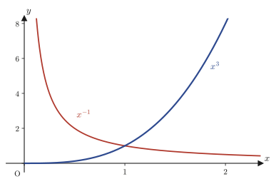
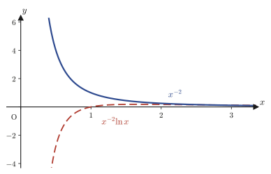
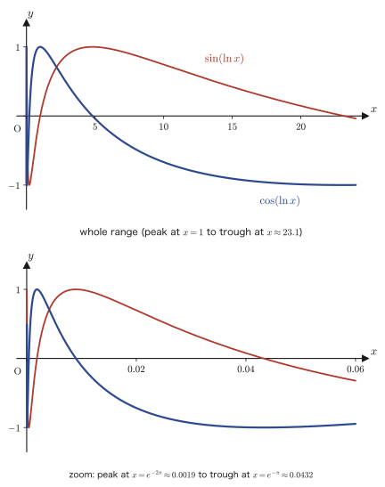
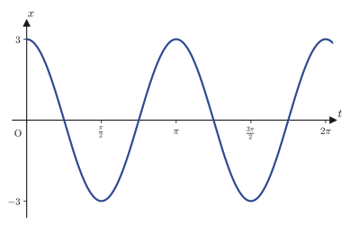

Chapter 36Second-Order Linear Nonhomogeneous Differential Equations and Euler's Equation
In Chapter 35 we solved second-order linear homogeneous differential equations $y''+ay'+by=0$ (the right-hand side is $0$), and learned how to build the general solution $Y=C_1y_1+C_2y_2$ from two linearly independent fundamental solutions $y_1,y_2$. However, real physical phenomena—a spring acted on by an external force, a circuit connected to a power source, a pendulum subject to gravity—are described by nonhomogeneous equations $y''+ay'+by=R(x)$, whose right-hand side contains an “input” or “external force” that is not $0$. In the first half of this chapter we learn two powerful methods for finding, for a given $R(x)$, a particular solution $y_0$ (the general solution is $y=y_0+Y$). One is variation of parameters, which can be used when two fundamental solutions are already known. The other is reduction of order, which can be used even when only a single fundamental solution is known—and with the latter, something surprising happens: merely by knowing one solution, we find not only a particular solution but also, like sweet potatoes coming up one after another when you pull a single vine, the other fundamental solution as well.
In the second half of the chapter we move on to second-order linear differential equations whose coefficients are not constants but depend on $x$. The representative example is Euler's differential equation (also called the Cauchy–Euler equation) $x^2y''+axy'+by=0$. This form often appears in the equations of physical systems with rotational symmetry, such as cylinders and spheres (the potential of a coaxial cable, the radial Schrödinger equation in quantum mechanics, the stresses in an elastic body, and so on). For the same reason that the exponential function $e^{\lambda x}$ gave the fundamental solutions of constant-coefficient equations, in Euler's equation the power function $x^\lambda$ is a candidate for a fundamental solution—this correspondence can be explained completely by the substitution $x=e^t$ (treated in Chapter 37). The fact that the fundamental solutions take one of three forms, according to the type of roots of the characteristic equation (distinct real roots, a repeated root, complex roots), has exactly the same logical structure as the three-way classification of constant-coefficient homogeneous equations that we learned in Chapter 35. In addition, we learn conditions for finding candidate fundamental solutions of a general variable-coefficient equation, and the technique of reduction to “normal form,” which eliminates the first-derivative term—a transformation technique that is also used frequently in physics. Finally, we look again at the equation of simple harmonic motion as circular motion in the $(x,\dot x)$ plane (phase space), and confirm geometrically that “oscillation” and “rotation” are two faces of the same phenomenon.
- Review of the structure of the general solution $y=y_0+Y$ of a nonhomogeneous equation, and when to use each of the two methods for finding a particular solution $y_0$
- Variation of parameters: when two fundamental solutions $y_1,y_2$ are known, find $C_1(x),C_2(x)$ using a matrix (the inverse matrix), and derive the formula $y_0=-y_1\displaystyle\int\frac{y_2R(x)}{W}\dd x+y_2\displaystyle\int\frac{y_1R(x)}{W}\dd x$
- Reduction of order: when only the fundamental solution $y_1$ is known, set $y=u(x)y_1$ to reduce the nonhomogeneous equation to a first-order linear differential equation for $u$
- Euler's differential equation $x^2y''+axy'+by=0$, its characteristic equation $\lambda^2+(a-1)\lambda+b=0$, and the origin of the trial solution $x^\lambda$
- The three forms of the general solution, according to the type of roots of the characteristic equation: distinct real roots $x^{\lambda_1},x^{\lambda_2}$ / repeated root $x^{\lambda_0},x^{\lambda_0}\ln x$ / complex roots $x^\alpha\cos(\beta\ln x),x^\alpha\sin(\beta\ln x)$
- Sufficient conditions under which, for a general second-order linear differential equation $y''+P(x)y'+Q(x)y=R(x)$, the fundamental solutions $x^\lambda$ or $e^{\lambda x}$ can be found (even with variable coefficients)
- Reduction to the normal form $u''+I(x)u=J(x)$: a technique that eliminates the first-derivative term by setting $y=u(x)v(x)$
- The circle $x^2+V^2=A^2$ in the phase space $(x,V)$, and the geometric solution $x(t)=A\cos(\omega t-\theta_0)$ of the differential equation of simple-harmonic type $m\ddot x=-kx$
Source notes: Yasuhide Mochizuki, Mathematics Notes: Ordinary Differential Equations, pp. 24–32.
36.1 Structure of the General Solution of a Nonhomogeneous Equation and Variation of Parameters
First, consider the second-order linear nonhomogeneous differential equation with constant coefficients $a,b$
\begin{equation} y''+ay'+by=R(x) \qquad \cdots ① \label{eq:36-inhomog} \end{equation}It is helpful to think of the right-hand side $R(x)$ as an “input” or an “external force” applied to the equation (if $R(x)=0$, it is the homogeneous equation we studied in Chapter 35). We write the homogeneous equation corresponding to ① as
\begin{equation} y''+ay'+by=0 \qquad \cdots ② \label{eq:36-homog} \end{equation}As the theorem proved in Chapter 35 shows, the general solution $y$ of ① has the form
$$ y=y_0+Y $$Here $Y$ is the general solution of ② (written with the fundamental solutions $y_1,y_2$ as $Y=C_1y_1+C_2y_2$), and we already learned how to find $Y$ in Chapter 35. On the other hand, $y_0$ need only be a single solution satisfying ①—we call this a particular solution of ①. The goal of this chapter is to master concrete methods for finding this $y_0$.
Why is it called “variation of parameters”?
Recall the method for solving the first-order linear differential equation $y'+P(x)y=Q(x)$ that we learned in Chapter 33. There we first found the general solution $y=C e^{-\int P(x)\dd x}$ of the homogeneous equation $y'+P(x)y=0$, and then “varied” the arbitrary constant $C$ into a function $C(x)$ of $x$, which gave the general solution $y=C(x)e^{-\int P(x)\dd x}$ of the nonhomogeneous equation. This time we use exactly the same idea. We conjecture that the function obtained by replacing the two arbitrary constants $C_1,C_2$ appearing in the general solution $Y=C_1y_1+C_2y_2$ of ② with functions $C_1(x),C_2(x)$ of $x$ \begin{equation} y_0=C_1(x)y_1+C_2(x)y_2 \qquad \cdots ③ \label{eq:36-ansatz} \end{equation} might be a particular solution of ①. This is the method of variation of parameters.
Let us investigate how to choose $C_1(x),C_2(x)$ so that ③ really satisfies ①. Differentiating both sides of ③ with respect to $x$ (using the product rule twice), we get
$$ y_0'=C_1'y_1+C_1y_1'+C_2'y_2+C_2y_2'=(C_1'y_1+C_2'y_2)+(C_1y_1'+C_2y_2') $$Here we use a little trick. We have not yet imposed a single condition on the two unknown functions $C_1(x),C_2(x)$ (③ says only that “$y_0$ has this form,” and $C_1,C_2$ themselves are free). So, to make the computation easier, we choose to impose the condition that the first parenthesized part be exactly $0$
\begin{equation} C_1'y_1+C_2'y_2=0 \qquad \cdots ④ \label{eq:36-c1c2-zero} \end{equation}(the computation that follows will confirm that, under this condition, $C_1,C_2$ can indeed be determined without contradiction). Then
\begin{equation} y_0'=C_1y_1'+C_2y_2' \qquad \cdots ⑤ \label{eq:36-y0prime} \end{equation}so that $C_1',C_2'$ do not appear in the expression for $y_0'$. Differentiating ⑤ once more with respect to $x$, we obtain
\begin{equation} y_0''=(C_1y_1'+C_2y_2')'=C_1'y_1'+C_1y_1''+C_2'y_2'+C_2y_2''=C_1'y_1'+C_2'y_2'+C_1y_1''+C_2y_2'' \qquad \cdots ⑥ \label{eq:36-y0double} \end{equation}Since $y_0$ is a solution of ①, substituting ③, ⑤, and ⑥ into the left-hand side of ① must give a result equal to $R(x)$. Carrying out the substitution, we get
$$ y_0''+ay_0'+by_0=\big(C_1'y_1'+C_2'y_2'+C_1y_1''+C_2y_2''\big)+a\big(C_1y_1'+C_2y_2'\big)+b\big(C_1y_1+C_2y_2\big) $$Regrouping the right-hand side in terms of $C_1,C_2$, we obtain
$$ =C_1\underbrace{(y_1''+ay_1'+by_1)}_{0}+C_2\underbrace{(y_2''+ay_2'+by_2)}_{0}+C_1'y_1'+C_2'y_2' $$The underbraced parts are $0$ because $y_1,y_2$ are both fundamental solutions of ② (the homogeneous equation). Therefore only $C_1'y_1'+C_2'y_2'$ remains on the left-hand side of ①, and this equals $R(x)$:
\begin{equation} C_1'y_1'+C_2'y_2'=R(x) \qquad \cdots ⑦ \label{eq:36-c1c2-R} \end{equation}The roles of ④ and ⑦
④ is a “convenient condition” that we imposed ourselves, whereas ⑦ is a “necessary condition” that arises from requiring ① to hold. Combining the two, we can determine the unknowns $C_1',C_2'$ from exactly two equations—④ and ⑦ are precisely the equations prepared for this purpose.
Regard ④ and ⑦ as a system of linear equations in the unknowns $C_1',C_2'$ and rewrite it in matrix form (using the notation for the product of a matrix and a vector that we learned in Chapters 8 and 9).
\begin{equation} \begin{cases} C_1'y_1+C_2'y_2=0 \\ C_1'y_1'+C_2'y_2'=R(x) \end{cases} \qquad\Longleftrightarrow\qquad \begin{bmatrix} y_1 & y_2 \\ y_1' & y_2' \end{bmatrix}\begin{bmatrix} C_1' \\ C_2' \end{bmatrix} = \begin{bmatrix} 0 \\ R(x) \end{bmatrix} \qquad \cdots ⑧ \label{eq:36-matrix} \end{equation}The determinant of this $2\times2$ matrix is exactly the Wronskian $W(y_1,y_2)=y_1y_2'-y_2y_1'$ of $y_1,y_2$. Since $y_1,y_2$ are linearly independent fundamental solutions of ②, $W(y_1,y_2)\neq0$ always holds, as we learned in Chapter 35. Because the determinant is not $0$, this matrix is invertible (it has an inverse matrix), and the formula for the inverse of a $2\times2$ matrix (Chapter 8) is
$$ \begin{bmatrix} y_1 & y_2 \\ y_1' & y_2' \end{bmatrix}^{-1} = \frac{1}{W(y_1,y_2)}\begin{bmatrix} y_2' & -y_2 \\ -y_1' & y_1 \end{bmatrix} $$Multiplying both sides of ⑧ on the left by this inverse, we obtain
$$ \begin{bmatrix} C_1' \\ C_2' \end{bmatrix} = \frac{1}{W}\begin{bmatrix} y_2' & -y_2 \\ -y_1' & y_1 \end{bmatrix}\begin{bmatrix} 0 \\ R(x) \end{bmatrix} = \frac{1}{W}\begin{bmatrix} -y_2R(x) \\ y_1R(x) \end{bmatrix} $$That is,
$$ C_1'(x)=-\frac{y_2R(x)}{W(y_1,y_2)}, \qquad C_2'(x)=\frac{y_1R(x)}{W(y_1,y_2)} $$(The right-hand sides are functions of $x$, so integrating both sides with respect to $x$ gives $C_1(x),C_2(x)$ themselves.) Integrating, we obtain
$$ C_1(x)=-\int\frac{y_2R(x)}{W(y_1,y_2)}\dd x, \qquad C_2(x)=\int\frac{y_1R(x)}{W(y_1,y_2)}\dd x $$Substituting these into ③, we can write down the particular solution $y_0$ explicitly.
Formula 36.1: Formula for a particular solution by variation of parameters
Consider the second-order linear nonhomogeneous differential equation $y''+ay'+by=R(x)$, and suppose that linearly independent fundamental solutions $y_1,y_2$ of the corresponding homogeneous equation (with Wronskian $W=W(y_1,y_2)\neq0$) are known. Then one particular solution is given by
\begin{equation} y_0=-y_1\int\frac{y_2R(x)}{W}\dd x+y_2\int\frac{y_1R(x)}{W}\dd x \label{eq:36-varparam} \end{equation}Therefore, the general solution of ① is
$$ y=y_0+Y=-y_1\int\frac{y_2R(x)}{W}\dd x+y_2\int\frac{y_1R(x)}{W}\dd x+C_1y_1+C_2y_2 $$.
Caution: This formula can be used even when the coefficients are not constant
In the derivation, all we actually used was that “$y_1,y_2$ are linearly independent solutions of the homogeneous equation $y''+P(x)y'+Q(x)y=0$”; we never used the fact that $P,Q$ are constants. Therefore, Eq. \eqref{eq:36-varparam} is a general formula that holds as it stands also for the general equation $y''+P(x)y'+Q(x)y=R(x)$, whose coefficients are functions of $x$. We use this formula again in Section 36.5.
Let us apply Eq. \eqref{eq:36-varparam} to a concrete equation.
Example 36.1: Variation of parameters ($y''-y=e^x$)
Find the general solution of the differential equation $y''-y=e^x$ by variation of parameters.
Solution. The characteristic equation of the homogeneous equation $y''-y=0$ is $\lambda^2-1=0$, so $\lambda=\pm1$ (Chapter 35); hence the fundamental solutions are $y_1=e^x,\ y_2=e^{-x}$. The Wronskian is
$$ W(y_1,y_2)=y_1y_2'-y_2y_1'=e^x\cdot(-e^{-x})-e^{-x}\cdot e^x=-1-1=-2 $$(Since it is not $0$, these are indeed linearly independent fundamental solutions.) Using $R(x)=e^x$, we obtain
$$ C_1'(x)=-\frac{y_2R(x)}{W}=-\frac{e^{-x}\cdot e^x}{-2}=\frac{1}{2}, \qquad C_2'(x)=\frac{y_1R(x)}{W}=\frac{e^x\cdot e^x}{-2}=-\frac{e^{2x}}{2} $$Integrating (the integration constants are absorbed into $Y$, so we may take them to be $0$), we get
$$ C_1(x)=\frac{x}{2}, \qquad C_2(x)=-\frac{e^{2x}}{4} $$Substituting into Eq. \eqref{eq:36-varparam}, we obtain
$$ y_0=C_1(x)y_1+C_2(x)y_2=\frac{x}{2}e^x-\frac{e^{2x}}{4}\cdot e^{-x}=\frac{x}{2}e^x-\frac{1}{4}e^x=e^x\left(\frac{x}{2}-\frac{1}{4}\right) $$Here, the term $-\frac{1}{4}e^x$ is a constant multiple of the fundamental solution $y_1=e^x$ of the homogeneous equation, so it may be absorbed into the arbitrary constant $C_1$ in the general solution (recall that a particular solution need only be any one solution satisfying ①). Therefore it suffices to adopt $y_0=\dfrac{x}{2}e^x$ as the particular solution, and the general solution is
$$ y=\frac{x}{2}e^x+C_1e^x+C_2e^{-x} $$(Indeed, substituting $y_p=\frac{x}{2}e^x$ directly into the equation, we have $y_p'=\frac12e^x+\frac{x}{2}e^x$ and $y_p''=e^x+\frac{x}{2}e^x$, so $y_p''-y_p=e^x$ holds. Also verified with SymPy.)
36.2 Solving the Equation When Only One Fundamental Solution Is Known (Reduction of Order)
The method of variation of parameters in Section 36.1 is powerful, but it presupposed that both fundamental solutions of the homogeneous equation were known. What should we do, then, when we can find only one fundamental solution? In fact, even from a single fundamental solution there is a way to derive the general solution of the nonhomogeneous equation—that is, both a particular solution $y_0$ and another fundamental solution. This method is called reduction of order.
The coefficients $P(x),Q(x)$ may be constants or functions of $x$ (as we saw in the Caution in Section 36.1, the derivation does not use the fact that the coefficients are constants). For the nonhomogeneous equation
$$ y''+P(x)y'+Q(x)y=R(x) \qquad \cdots ① $$we write the corresponding homogeneous equation as
$$ y''+P(x)y'+Q(x)y=0 \qquad \cdots ② $$Suppose that only one fundamental solution of this homogeneous equation is known: $y_1(\neq0)$.
Intuition: After $C_1,C_2$ comes $u(x)$
In Section 36.1, we “varied” the constants $C_1,C_2$ in the general solution $C_1y_1+C_2y_2$ of the homogeneous equation, turning them into functions $C_1(x),C_2(x)$. This time there is only the single fundamental solution $y_1$, so we apply the same idea to just one function. That is, we assume that the general solution of the nonhomogeneous equation ① has the form
$$ y=u(x)\cdot y_1 \qquad \cdots ③ $$—a “function multiple” of $y_1$, rather than a “constant multiple.”
Differentiate both sides of ③ once and twice (product rule).
$$ y'=u'y_1+uy_1' \qquad \cdots ④ $$ $$ y''=u''y_1+2u'y_1'+uy_1'' \qquad \cdots ⑤ $$Since we assumed that ③ is a solution of ①, the result of substituting ③, ④, ⑤ into the left-hand side of ① equals $R(x)$. Actually carrying out the substitution, we get
$$ R(x)=\big(u''y_1+2u'y_1'+uy_1''\big)+P(x)\big(u'y_1+uy_1'\big)+Q(x)\cdot uy_1 $$Regroup the right-hand side by collecting the terms in $u,u',u''$.
$$ =u\underbrace{\big(y_1''+P(x)y_1'+Q(x)y_1\big)}_{0}+u''y_1+u'\big(2y_1'+P(x)y_1\big) $$The underbraced part is $0$ because $y_1$ is a solution of the homogeneous equation ($y_1''+P(x)y_1'+Q(x)y_1=0$). Hence only the terms involving the first and second derivatives of $u$ remain, and we obtain
$$ u''y_1+u'\big(2y_1'+P(x)y_1\big)=R(x) $$Dividing both sides by $y_1$ ($\neq0$) turns this into an equation for $u$.
$$ u''+u'\left(\frac{2y_1'}{y_1}+P(x)\right)=\frac{R(x)}{y_1} $$Now let $u'=p(x)$ (so that $u''=p'$), and abbreviate $A(x)=\dfrac{2y_1'}{y_1}+P(x)$ and $B(x)=\dfrac{R(x)}{y_1}$. Then we obtain
$$ p'+A(x)p=B(x) $$This is the form the equation takes.
Caution: This is a first-order linear differential equation
Setting $p=u'$ puts the equation in the form $p'+A(x)p=B(x)$, which is nothing other than the first-order linear differential equation we studied in Chapter 33. Therefore the solution formula of Chapter 33 can be used as it stands.
Indeed, the solution formula
$$ p(x)=u'(x)=e^{-\int A(x)\dd x}\left\{\int B(x)\,e^{\int A(x)\dd x}\dd x+C_1\right\} $$can be used as it stands. Once $p(x)$ is found, we integrate it once more with respect to $x$ to obtain $u(x)$, and finally substitute into ③, $y=u(x)y_1$; this completes the general solution of ①.
Theorem 36.1: Reduction of order
Suppose that for the nonhomogeneous equation $y''+P(x)y'+Q(x)y=R(x)$ only one fundamental solution $y_1(\neq0)$ of the corresponding homogeneous equation is known. If we put $y=u(x)y_1$, then $u$ satisfies the relation $$ u''+\left(\frac{2y_1'}{y_1}+P(x)\right)u'=\frac{R(x)}{y_1} $$ (if we put $p=u'$, this reduces to a first-order linear differential equation $p'+A(x)p=B(x)$ for $p$, which can be solved by the formula of Chapter 33). Once $u(x)$ is found, $y=u(x)y_1$ gives the general solution of ①.
Why this method is convenient
This is a very convenient method: knowing just one fundamental solution of the homogeneous equation is enough to obtain the general solution of the nonhomogeneous equation (both a particular solution $y_0$ and a second fundamental solution $y_2$). Let us verify this concretely in the next example.
Example 36.2: Reduction of order ($y''-3y'+2y=e^{4x}$, with only $y_1=e^x$ known)
For the equation $y''-3y'+2y=e^{4x}$, suppose that all we know is that one fundamental solution of the homogeneous equation $y''-3y'+2y=0$ is $y_1=e^x$ (we proceed as if the other fundamental solution $y_2$ were not known). Find the general solution by reduction of order.
Solution. Here $P(x)=-3$ (a constant), $R(x)=e^{4x}$, and $y_1=e^x$ (hence $y_1'=e^x$). Computing the coefficients in Theorem 36.1, we get
$$ A(x)=\frac{2y_1'}{y_1}+P(x)=\frac{2e^x}{e^x}+(-3)=2-3=-1, \qquad B(x)=\frac{R(x)}{y_1}=\frac{e^{4x}}{e^x}=e^{3x} $$($A(x)$ became a constant simply because $y_1$ happens to be an exponential function.) Setting $p=u'$, the equation for $u$ becomes
$$ p'-p=e^{3x} $$This is a first-order linear equation. The integrating factor is $e^{\int(-1)\dd x}=e^{-x}$ (Chapter 33), so multiplying both sides by $e^{-x}$ gives
$$ (pe^{-x})'=e^{3x}\cdot e^{-x}=e^{2x} $$Integrating both sides, we get $pe^{-x}=\frac12e^{2x}+C_1$, that is,
$$ p(x)=u'(x)=\frac12e^{3x}+C_1e^x $$Integrating once more with respect to $x$, we get
$$ u(x)=\frac16e^{3x}+C_1e^x+C_2 $$Substituting this into $y=u(x)y_1=u(x)e^x$, we obtain
$$ y=\left(\frac16e^{3x}+C_1e^x+C_2\right)e^x=\frac16e^{4x}+C_1e^{2x}+C_2e^x $$This completes the solution. What deserves attention is that, although at the starting point we knew only $y_1=e^x$, the result gives us
- the particular solution $y_0=\dfrac16e^{4x}$ (as a check by the method of undetermined coefficients, substituting $y_p=Ae^{4x}$ gives $16A-12A+2A=6A=1$, so $A=\frac16$, which agrees), and
- the other fundamental solution of the homogeneous equation, $y_2=e^{2x}$ (it appeared automatically as the coefficient of $C_1$),
that is, both of them. Starting from a single fundamental solution $y_1$, information about the whole equation (the other fundamental solution and a particular solution) comes out one after another, like sweet potatoes that all come up when you pull a single vine—this is the power of reduction of order. (That $e^x,e^{2x}$ are fundamental solutions of the homogeneous equation $y''-3y'+2y=0$ can also be confirmed from the characteristic equation $\lambda^2-3\lambda+2=(\lambda-1)(\lambda-2)=0$, and the whole computation has also been verified with SymPy.)
36.3 Euler's Differential Equation — Discovering the Trial Solution $x^\lambda$
So far we have mainly dealt with equations with constant coefficients (Sections 36.1 and 36.2). From here on, we turn to second-order linear differential equations whose coefficients are functions of $x$. The most fundamental of these, and the one with the widest range of applications, is the following Euler's differential equation.
Definition 36.1: Euler's differential equation (Cauchy–Euler equation)
Let $a,b$ be constants. A second-order linear homogeneous differential equation of the form $$ x^2\frac{\dd^2y}{\dd x^2}+ax\frac{\dd y}{\dd x}+by=0 \qquad (x\neq0) $$ is called Euler's differential equation or the Cauchy–Euler equation. Although the coefficients themselves depend on $x$, its distinguishing feature is that $x$ appears only in the special combinations $x^k\cdot y^{(k)}$.
Physical meaning: Why does Euler's equation appear in problems with spheres and cylinders?
Euler's differential equation appears again and again when physical systems with rotational symmetry are treated in polar or cylindrical coordinates: the potential distribution inside a coaxial cable, the radial Schrödinger equation of quantum mechanics in spherically or cylindrically symmetric potentials, the stress distribution in an elastic body, and so on. The reason is that the radial differential operator appearing in the polar-coordinate Laplacian has precisely the form $x^2\dfrac{\dd^2}{\dd x^2}+ax\dfrac{\dd}{\dd x}$. We will confirm this fact concretely from Chapter 44 (Coordinate Transformations and the Laplacian) onward.
36.3.1 Why try $x^\lambda$? — Examining a simple case
Recall that in Chapter 35, when we substituted the exponential function $y=e^{\lambda x}$ into the constant-coefficient homogeneous equation $y''+ay'+by=0$, a quadratic equation in $\lambda$ (the characteristic equation) appeared. For Euler's equation as well, we begin in the same way, by finding the “form” of the solutions. To keep things simple, consider the case $b=0$, $$ x^2\frac{\dd y'}{\dd x}+ax\cdot y'=0 $$ (noting that $y''=\dfrac{\dd y'}{\dd x}$, we regard this as a first-order equation for $y'$). For $x\neq0$, dividing both sides by $x\cdot y'$ turns it into a separable equation.
$$ \frac{1}{y'}\dd y'=-\frac{a}{x}\dd x $$Integrating both sides (by the method of separation of variables from Chapter 33) gives
$$ \ln|y'|=-a\ln|x|+C_1 $$Let $C_1=\ln|C_2|$ (where $C_2\neq0$ is a constant) and combine the right-hand side into a single logarithm; this gives $\ln|y'|=\ln\left|C_2x^{-a}\right|$, and exponentiating both sides yields
$$ y'=C_2\,x^{-a} $$Here $C_2$ is an arbitrary constant, which may be positive or negative. We integrate this once more with respect to $x$. For $a\neq1$, using the integration formula for power functions $\displaystyle\int x^{-a}\dd x=\frac{x^{1-a}}{1-a}$ (since $-a\neq-1$), we get
$$ y=\int y'\dd x=\frac{C_2}{1-a}\,x^{1-a}+C \qquad \big(C:\text{integration constant}\big) $$Regrouping the constants by setting $C_0=\dfrac{C_2}{1-a}$, we obtain
$$ y=C_0\,\underbrace{x^{1-a}}_{\text{candidate for a fundamental solution}}+C $$Thus $x^{1-a}$ (together with the constant function $x^0=1$) emerges as a candidate for a fundamental solution. In other words, we are led to the conjecture that, in the general case as well, the fundamental solutions have the form $x^\lambda$ ($\lambda$ some constant).
36.3.2 The general case: substituting $x^\lambda$ directly
Based on this conjecture, let us actually substitute $y=x^\lambda$ ($\lambda$ a constant) into Euler's equation in its general form $x^2y''+axy'+by=0$. Since $y'=\lambda x^{\lambda-1}$ and $y''=\lambda(\lambda-1)x^{\lambda-2}$, we have
$$ x^2\cdot\underbrace{\lambda(\lambda-1)x^{\lambda-2}}_{y''}+ax\cdot\underbrace{\lambda x^{\lambda-1}}_{y'}+b\cdot x^\lambda =\lambda(\lambda-1)x^\lambda+a\lambda x^\lambda+bx^\lambda $$(note that $x^\lambda$ is a common factor of all three terms—this is the reason why $x^\lambda$ fits Euler's equation so well). Factoring out $x^\lambda$, we obtain
$$ x^\lambda\Big\{\underline{\lambda(\lambda-1)+a\lambda+b}\Big\}=0 $$The underlined part is called the characteristic equation. Since $x\neq0$ implies $x^\lambda\neq0$, for the left-hand side to be $0$ the underlined part itself must be $0$. Expanding and collecting terms in $\lambda$, we get
\begin{equation} \lambda^2+(a-1)\lambda+b=0 \label{eq:36-euler-char} \end{equation}which is a quadratic equation in $\lambda$.
Formula 36.2: Characteristic equation of Euler's equation
Substituting $y=x^\lambda$ into Euler's differential equation $x^2y''+axy'+by=0$ gives the characteristic equation $$ \lambda^2+(a-1)\lambda+b=0 $$ If $\lambda_1,\lambda_2$ are the roots of this quadratic equation, then $x^{\lambda_1},x^{\lambda_2}$ are fundamental solutions of the equation (when $\lambda_1\neq\lambda_2$). The form of the general solution falls into three cases, according to whether $\lambda_1,\lambda_2$ are distinct real roots, a repeated root, or complex roots (we examine these in detail in Section 36.4).
Checking consistency with the result of Section 36.3.1
When $b=0$, the characteristic equation, Eq. \eqref{eq:36-euler-char}, becomes $\lambda^2+(a-1)\lambda=\lambda\big(\lambda+(a-1)\big)=0$, and its roots are $\lambda=0$ and $\lambda=1-a$. These coincide exactly with the fundamental solution $x^{1-a}$ found in Section 36.3.1 (corresponding to $\lambda=1-a$) and with the integration constant $C$ (the constant function $x^0=1$, corresponding to $\lambda=0$). We have thus confirmed that the computation in the simple case and the general formula connect without contradiction.
Example 36.3: Fundamental solutions of Euler's equation ($x^2y''-2y=0$)
Find the general solution of Euler's differential equation $x^2y''-2y=0$ ($x\gt0$).
Solution. This equation is the case $a=0,\ b=-2$. By Formula 36.2, the characteristic equation is
$$ \lambda^2+(0-1)\lambda+(-2)=\lambda^2-\lambda-2=0 $$Factoring the left-hand side gives $(\lambda-2)(\lambda+1)=0$, so $\lambda=2,-1$. Therefore the fundamental solutions are $x^2$ and $x^{-1}$, and the general solution is
$$ y=C_1x^2+C_2x^{-1} $$As a check, substitute $y=x^2$ directly: from $y'=2x,\ y''=2$ we get $x^2\cdot2-2\cdot x^2=2x^2-2x^2=0$. Likewise, substituting $y=x^{-1}$: from $y'=-x^{-2},\ y''=2x^{-3}$ we get $x^2\cdot2x^{-3}-2\cdot x^{-1}=2x^{-1}-2x^{-1}=0$. Both indeed satisfy the equation (verified with SymPy).
36.4 Solving Euler's Differential Equation — Real Roots, Repeated Roots, and Complex Roots
In Section 36.3 we derived the characteristic equation $\lambda^2+(a-1)\lambda+b=0$ of Euler's equation $x^2y''+axy'+by=0$. Depending on the type of roots of this quadratic equation (the sign of the discriminant), the form of the general solution splits into three cases. This has exactly the same logical structure as the three-way classification of constant-coefficient homogeneous equations that we learned in Chapter 35—in fact, with the substitution $x=e^t$, which we will study in Chapter 37, Euler's equation can be transformed completely into an equation with constant coefficients. Here we examine the three cases directly, within the framework of Euler's equation, without using that substitution.
36.4.1 The case of two distinct real roots
When the roots $\lambda_1,\lambda_2$ ($\lambda_1\neq\lambda_2$) of the characteristic equation are real, the fundamental solutions are $x^{\lambda_1},x^{\lambda_2}$, as we already saw in Section 36.3. Just to be safe, let us confirm their linear independence with the Wronskian.
$$ W(x^{\lambda_1},x^{\lambda_2})=\begin{vmatrix} x^{\lambda_1} & x^{\lambda_2} \\ \lambda_1x^{\lambda_1-1} & \lambda_2x^{\lambda_2-1}\end{vmatrix} =\lambda_2x^{\lambda_1+\lambda_2-1}-\lambda_1x^{\lambda_1+\lambda_2-1}=(\lambda_2-\lambda_1)x^{\lambda_1+\lambda_2-1} $$Since $\lambda_1\neq\lambda_2$ and $x\neq0$, we have $W(x^{\lambda_1},x^{\lambda_2})\neq0$. Therefore $x^{\lambda_1},x^{\lambda_2}$ are linearly independent fundamental solutions, and the general solution is
$$ y=C_1x^{\lambda_1}+C_2x^{\lambda_2} $$.
Example 36.4: The case of distinct real roots ($x^2y''-xy'-3y=0$)
Find the general solution of Euler's differential equation $x^2y''-xy'-3y=0$ ($x\gt0$).
Solution. Here $a=-1,\ b=-3$. The characteristic equation is
$$ \lambda^2+(-1-1)\lambda+(-3)=\lambda^2-2\lambda-3=(\lambda-3)(\lambda+1)=0 $$so $\lambda=3,-1$ (distinct real roots). Hence the general solution is
$$ y=C_1x^3+C_2x^{-1} $$(Verified with SymPy: substituting each of $x^3$ and $x^{-1}$ into the equation gives $0$.)

36.4.2 The case of a repeated root
The characteristic equation $\lambda^2+(a-1)\lambda+b=0$ has a repeated root $\lambda_0$ when the discriminant is $0$, that is, when $(a-1)^2-4b=0$.
Caution: How to find $\lambda_0$
Since the characteristic equation $\lambda_0^2+(a-1)\lambda_0+b=0$ has a repeated root, it suffices to set the discriminant equal to $0$ in the quadratic formula.
$$ \lambda_0=\frac{-(a-1)\pm\sqrt{0}}{2}=-\frac{a-1}{2} $$In this case one fundamental solution is $x^{\lambda_0}$, but a second-order differential equation needs two fundamental solutions (Chapter 35: the solution space is two-dimensional). So we look for another fundamental solution by setting $y=u(x)\cdot x^{\lambda_0}$ (the same idea as the reduction of order in Section 36.2).
$$ \frac{\dd y}{\dd x}=u'x^{\lambda_0}+u\lambda_0x^{\lambda_0-1}, \qquad \frac{\dd^2y}{\dd x^2}=u''x^{\lambda_0}+2u'\lambda_0x^{\lambda_0-1}+u\lambda_0(\lambda_0-1)x^{\lambda_0-2} $$Substituting these into $x^2y''+axy'+by$, we obtain
$$ x^2\frac{\dd^2y}{\dd x^2}+ax\frac{\dd y}{\dd x}+by =u''x^{\lambda_0+2}+(2u'\lambda_0+au')x^{\lambda_0+1}+\Big\{\underbrace{\lambda_0(\lambda_0-1)+a\lambda_0+b}_{0}\Big\}u\,x^{\lambda_0} $$The expression in the braces becomes $0$ because $\lambda_0$ is a root of the characteristic equation. Hence the condition that this equal $0$ (the homogeneous equation) becomes
$$ \big\{u''x+(2\lambda_0+a)u'\big\}x^{\lambda_0+1}=0 $$Here, since $\lambda_0=-\dfrac{a-1}{2}$, that is, $2\lambda_0=-(a-1)=1-a$, we have
$$ 2\lambda_0+a=(1-a)+a=1 $$This is a convenient relation (an identity that always holds in the case of a repeated root). Since $x^{\lambda_0+1}\neq0$ ($x\neq0$), the expression in the braces must be $0$, which leaves the following equation for $u$:
$$ xu''+u'=0 $$Setting $v=u'$ gives $xv'+v=0$, that is, the separable equation
$$ \frac{1}{v}\dd v=-\frac{1}{x}\dd x $$Integrating (since we take $x\gt0$, no absolute value is needed), we obtain
$$ \ln|v|=-\ln x+C_1' \quad\Longrightarrow\quad v=\frac{C_1}{x} \qquad (C_1=e^{C_1'}) $$Hence $u=\displaystyle\int v\,\dd x=-C_1\ln x+C_2$ (the way the sign is attached depends on how the arbitrary constants are chosen, so from here on we may rewrite $C_1\to-C_1$ and write $u=C_1\ln x+C_2$). Since it is $u(x)$ itself that we want to use for the fundamental solution, we choose $C_1=1,C_2=0$ and take $u(x)=\ln x$, which gives another fundamental solution
$$ y_2=x^{\lambda_0}\ln x $$Checking the Wronskian, we find
$$ W\big(x^{\lambda_0},x^{\lambda_0}\ln x\big)=\begin{vmatrix} x^{\lambda_0} & x^{\lambda_0}\ln x \\ \lambda_0x^{\lambda_0-1} & (\lambda_0\ln x+1)x^{\lambda_0-1}\end{vmatrix}=x^{2\lambda_0-1}\neq0 $$so the linear independence is confirmed.
Theorem 36.2 (the case of a repeated root)
When the characteristic equation $\lambda^2+(a-1)\lambda+b=0$ has a repeated root $\lambda_0=-\dfrac{a-1}{2}$, the general solution of Euler's equation is $$ y=C_1x^{\lambda_0}+C_2x^{\lambda_0}\ln x $$
Example 36.5: The case of a repeated root ($x^2y''+5xy'+4y=0$)
Find the general solution of Euler's differential equation $x^2y''+5xy'+4y=0$ ($x\gt0$).
Solution. Here $a=5,\ b=4$. The characteristic equation is
$$ \lambda^2+(5-1)\lambda+4=\lambda^2+4\lambda+4=(\lambda+2)^2=0 $$so we obtain the repeated root $\lambda_0=-2$. By Theorem 36.2, the general solution is
$$ y=C_1x^{-2}+C_2x^{-2}\ln x $$(Verified with SymPy: substituting each of $x^{-2}$ and $x^{-2}\ln x$ into the equation gives $0$, and the Wronskian is $x^{-5}\neq0$.)

36.4.3 The case of complex roots
Consider the case where the characteristic equation has complex roots $\lambda_1=\alpha+i\beta,\ \lambda_2=\alpha-i\beta$ ($\alpha,\beta\in\R$, $\beta\neq0$, and $i$ is the imaginary unit). In this case too, the fundamental solutions are formally $x^{\alpha+i\beta},x^{\alpha-i\beta}$, and the general solution can be written as
$$ y=C_1'x^{\alpha+i\beta}+C_2'x^{\alpha-i\beta} $$but we have not yet explained the meaning of $x^{i\beta}$, a “real number raised to a complex power.”
Why define $x^{i\beta}=e^{i\beta\ln x}$?
For a real exponent $r$, the relation $x^r=e^{r\ln x}$ ($x\gt0$) is well known (it reflects the fact that logarithms and exponentials are inverse operations of each other; see Properties of Logarithms in High School Mathematics). For the complex exponent $i\beta$ as well, we adopt this relation as it stands as a definition: $$ x^{i\beta}:=e^{i\beta\ln x} \qquad (x\gt0) $$ In this way, laws of exponents such as $x^{r+s}=x^rx^s$ extend as they are to complex exponents. What remains is to understand the meaning of the exponential function $e^{i\theta}$ on the right-hand side, whose exponent is a complex number ($\theta=\beta\ln x$ is a real number).
Math Note: Euler's formula $e^{i\theta}=\cos\theta+i\sin\theta$
When $\theta$ is a real number, the complex exponential function satisfies the relation $$ e^{i\theta}=\cos\theta+i\sin\theta $$ (Euler's formula). A rigorous proof will be given anew in the chapter on complex analysis (Chapter 23), but intuitively we can convince ourselves of it as follows: expand $e^x,\cos\theta,\sin\theta$ in Maclaurin series (Chapter 4), substitute $x=i\theta$ formally, and use $i^2=-1,\ i^3=-i,\ i^4=1,\ldots$; then the even-order terms coincide exactly with the expansion of $\cos\theta$, and the odd-order terms (each containing a single factor $i$) coincide exactly with the expansion of $i\sin\theta$. In this chapter we use this fact as known.
Using Euler's formula, we get
$$ y=C_1'x^\alpha e^{i\beta\ln x}+C_2'x^\alpha e^{-i\beta\ln x} =C_1'x^\alpha\big(\cos(\beta\ln x)+i\sin(\beta\ln x)\big)+C_2'x^\alpha\big(\cos(\beta\ln x)-i\sin(\beta\ln x)\big) $$(Here $e^{-i\beta\ln x}=\cos(\beta\ln x)-i\sin(\beta\ln x)$ follows from Euler's formula with $\theta\to-\theta$, using the facts that $\cos$ is an even function and $\sin$ is an odd function.) Collecting the terms in $\cos(\beta\ln x)$ and in $\sin(\beta\ln x)$ separately, we obtain
$$ y=(C_1'+C_2')x^\alpha\cos(\beta\ln x)+i(C_1'-C_2')x^\alpha\sin(\beta\ln x) $$Now let $C_1=C_1'+C_2',\ C_2=i(C_1'-C_2')$ (if $C_1',C_2'$ are chosen suitably from the complex numbers, $C_1,C_2$ become arbitrary real constants). Then
$$ y=C_1x^\alpha\cos(\beta\ln x)+C_2x^\alpha\sin(\beta\ln x) $$We thus obtain a real-valued general solution that does not contain the imaginary unit $i$. Checking the Wronskian, we find
$$ W\big(x^\alpha\cos(\beta\ln x),\,x^\alpha\sin(\beta\ln x)\big)=\beta\,x^{2\alpha-1} $$.
Caution: We must have $\beta\neq0$
For the Wronskian $\beta x^{2\alpha-1}$ not to become $0$, $\beta\neq0$ is necessary. If $\beta=0$, the roots of the characteristic equation would not be complex numbers in the first place (the situation reduces to the case of a repeated root or of real roots), and the premise of the discussion in this section would collapse. In other words, $\beta\neq0$ is a condition that is automatically satisfied as long as we are considering the case of complex roots.
Theorem 36.3 (the case of complex roots)
When the characteristic equation $\lambda^2+(a-1)\lambda+b=0$ has complex roots $\lambda=\alpha\pm i\beta$ ($\beta\neq0$), the general solution of Euler's equation is $$ y=C_1x^\alpha\cos(\beta\ln x)+C_2x^\alpha\sin(\beta\ln x) $$
Example 36.6: The case of complex roots ($x^2y''+xy'+y=0$)
Find the general solution of Euler's differential equation $x^2y''+xy'+y=0$ ($x\gt0$).
Solution. Here $a=1,\ b=1$. The characteristic equation is
$$ \lambda^2+(1-1)\lambda+1=\lambda^2+1=0 $$so $\lambda=\pm i$ ($\alpha=0,\ \beta=1$). By Theorem 36.3, the general solution is
$$ y=C_1\cos(\ln x)+C_2\sin(\ln x) $$(Since $x^\alpha=x^0=1$, no coefficient appears in front.) We have verified with SymPy that substituting each of $\cos(\ln x),\sin(\ln x)$ into the equation gives $0$.

36.5 General Second-Order Linear Differential Equations — Conditions for Finding Fundamental Solutions
Euler's equation was a special example that can be solved even though its coefficients are functions of $x$. Here we widen our view further and consider the most general second-order linear differential equation, in which the coefficients are arbitrary functions $P(x),Q(x)$:
$$ \frac{\dd^2y}{\dd x^2}+P(x)\frac{\dd y}{\dd x}+Q(x)y=R(x) $$Even if the coefficients are not constant, as long as we know the fundamental solutions $y_1,y_2$ (solutions of the homogeneous equation) and a particular solution $y_0$, the general solution takes the form
$$ y=y_0+C_1y_1+C_2y_2 $$exactly as in the discussions of Sections 36.1 and 36.2. Moreover, Formula 36.1 (variation of parameters) for finding a particular solution $y_0$ can also be used as it is even when the coefficients are not constant, as we confirmed in the Caution in Section 36.1:
$$ y_0=-y_1\int\frac{y_2R(x)}{W(y_1,y_2)}\dd x+y_2\int\frac{y_1R(x)}{W(y_1,y_2)}\dd x $$The problem is how to find the two fundamental solutions $y_1,y_2$ themselves. For general $P(x),Q(x)$ there is no universal method for finding fundamental solutions. However, only when $P(x),Q(x)$ satisfy certain special conditions can we sometimes find a fundamental solution of the form $x^\lambda$ or $e^{\lambda x}$ directly, simply by substitution.
36.5.1 Condition (I): When $x^\lambda$ is a fundamental solution
Let us substitute $y=x^\lambda$ ($\lambda$ is a constant) into the left-hand side $\dfrac{\dd^2y}{\dd x^2}+P(x)\dfrac{\dd y}{\dd x}+Q(x)y$ of the general equation. Since $y'=\lambda x^{\lambda-1}$ and $y''=\lambda(\lambda-1)x^{\lambda-2}$, we have
$$ \frac{\dd^2y}{\dd x^2}+P(x)\frac{\dd y}{\dd x}+Q(x)y =\lambda(\lambda-1)x^{\lambda-2}+P(x)\lambda x^{\lambda-1}+Q(x)x^\lambda $$Factoring $x^{\lambda-2}$ ($\neq0$) out of the right-hand side, we obtain
$$ =\underbrace{x^{\lambda-2}}_{\neq0}\Big\{\lambda(\lambda-1)+\lambda xP(x)+x^2Q(x)\Big\} $$Therefore, if we can choose the constant $\lambda$ cleverly so that
$$ \lambda(\lambda-1)+\lambda xP(x)+x^2Q(x)=0 \qquad \text{(identically, regardless of $x$)} $$holds, then the contents of the curly braces become $0$, and we see that $y=x^\lambda$ is one of the fundamental solutions of this equation.
36.5.2 Condition (II): When $e^{\lambda x}$ is a fundamental solution
Similarly, substituting $y=e^{\lambda x}$ and using $y'=\lambda e^{\lambda x}$ and $y''=\lambda^2e^{\lambda x}$, we have
$$ \frac{\dd^2y}{\dd x^2}+P(x)\frac{\dd y}{\dd x}+Q(x)y =\lambda^2e^{\lambda x}+P(x)\lambda e^{\lambda x}+Q(x)e^{\lambda x} =\underbrace{e^{\lambda x}}_{\neq0}\Big\{\lambda^2+\lambda P(x)+Q(x)\Big\} $$Thus, if we can choose the constant $\lambda$ cleverly so that
$$ \lambda^2+\lambda P(x)+Q(x)=0 \qquad \text{(identically, regardless of $x$)} $$holds, then $y=e^{\lambda x}$ is one of the fundamental solutions.
Theorem 36.4: Conditions under which a fundamental solution can be found directly for an equation with variable coefficients
For the second-order linear differential equation $y''+P(x)y'+Q(x)y=0$:
(I) If $\lambda(\lambda-1)+\lambda xP(x)+x^2Q(x)=0$ holds identically for some constant $\lambda$, then $y=x^\lambda$ is one of the fundamental solutions.
(II) If $\lambda^2+\lambda P(x)+Q(x)=0$ holds identically for some constant $\lambda$, then $y=e^{\lambda x}$ is one of the fundamental solutions.
Relation between condition (I) and Euler's equation
Consider condition (I) in the special case $P(x)=\dfrac{a}{x}$, $Q(x)=\dfrac{b}{x^2}$ ($a,b$ are constants). Then $\lambda(\lambda-1)+\lambda x\cdot\dfrac{a}{x}+x^2\cdot\dfrac{b}{x^2}=\lambda(\lambda-1)+a\lambda+b$, so $x$ disappears completely, and this is exactly the characteristic equation of Euler's equation that we saw in Section 36.3. In other words, condition (I) is a broader criterion that contains Euler's equation as a special case—even if $P(x),Q(x)$ are not exactly constant multiples of $1/x,1/x^2$, the same idea can be used as long as $\lambda(\lambda-1)+\lambda xP(x)+x^2Q(x)$ is a constant independent of $x$.
Example 36.7: Finding a fundamental solution with condition (II) ($y''+2xy'-(1+2x)y=0$)
Show that the equation $y''+2xy'-(1+2x)y=0$ has a fundamental solution of the form $y=e^{\lambda x}$ ($\lambda$ is a constant), and find that $\lambda$.
Solution. This equation is the case in which $P(x)=2x$ and $Q(x)=-(1+2x)$. We examine condition (II) of Theorem 36.4.
$$ \lambda^2+\lambda P(x)+Q(x)=\lambda^2+2\lambda x-(1+2x)=(\lambda^2-1)+2x(\lambda-1) $$For this to be identically $0$ regardless of $x$, the coefficient of $x$ and the constant term must each be $0$.
$$ 2(\lambda-1)=0 \qquad \text{and} \qquad \lambda^2-1=0 $$The first equation gives $\lambda=1$. This also satisfies the second equation $\lambda^2-1=(\lambda-1)(\lambda+1)=0$ ($\lambda=1$ is one of its roots), so the two conditions are consistent, and $\lambda=1$ is a constant satisfying condition (II). Therefore, by Theorem 36.4, $y=e^x$ is one of the fundamental solutions of this equation.
Let us actually verify this by direct substitution. For $y=e^x$ we have $y'=e^x,\ y''=e^x$, so
$$ y''+2xy'-(1+2x)y=e^x+2xe^x-(1+2x)e^x=e^x\big\{1+2x-1-2x\big\}=0 $$and it indeed satisfies the equation (the other fundamental solution can be found by applying the reduction-of-order method of Section 36.2 to $y_1=e^x$).
36.6 Reduction to Normal Form
Conditions (I) and (II) of Section 36.5 can be used only when $P(x),Q(x)$ have rather special forms. For general $P(x),Q(x)$, we cannot hope to find fundamental solutions directly. However, we can always rewrite the equation itself in a form that is easier to work with. Here we learn a transformation that eliminates the first-derivative term $y'$.
Why try the form “product of functions”?
Any number can be expressed as a combination of sums and products of other numbers (for example, $\pi$ and $e$ can be expressed as infinite series—that is, sums—and a number can also be expressed as a combination of a product and a sum, as in $26=5\times5+1$). The same idea works for functions. In Section 36.2, we looked for a solution of the nonhomogeneous equation as the product of a “known fundamental solution $y_1$” and an “unknown function $u(x)$,” namely $y=u(x)y_1$. This time, let us look for a solution of Eq. ①
$$ \frac{\dd^2y}{\dd x^2}+P(x)\frac{\dd y}{\dd x}+Q(x)y=R(x) \qquad \cdots ① $$as a product $y=u(x)v(x)$ of two unknown functions $u(x),v(x)$. The aim is to choose $v(x)$ in whatever way is convenient for us, and thereby simplify the equation satisfied by $u(x)$.
Differentiating both sides of $y=uv$ once and twice (by the product rule), we obtain
$$ \frac{\dd y}{\dd x}=u'v+uv', \qquad \frac{\dd^2y}{\dd x^2}=u''v+2u'v'+uv'' $$Substituting these into ① gives
$$ (u''v+2u'v'+uv'')+P(x)(u'v+uv')+Q(x)uv=R(x) $$Regrouping this according to the order of the derivative of $u$ ($u,u',u''$), we obtain
$$ v\cdot u''+\big(2v'+P(x)v\big)u'+\big(v''+P(x)v'+Q(x)v\big)u=R(x) \qquad \cdots ② $$Now recall that we have not yet specified $v(x)$ at all. If we deliberately choose the coefficient $2v'+P(x)v$ of $u'$ ourselves so that
$$ 2v'+P(x)v=0 $$then the $u'$ term vanishes from ②, and only the $u''$ term and the $u$ term remain—this is the mechanism for producing the “normal form.” Since this condition is a first-order separable equation (Chapter 33),
$$ \frac{1}{v}\dd v=-\frac12P(x)\dd x \quad\Longrightarrow\quad v=e^{-\frac12\int P(x)\dd x} $$(Since $v$ is a function of which “we need to find just one,” no integration constant is needed; we may take $C=0$.) For the $v$ chosen in this way, we have $v'=-\dfrac12P(x)v$, and differentiating this once more gives $v''=-\dfrac12\big(P'(x)v+P(x)v'\big)$. Substituting these into the coefficient $v''+P(x)v'+Q(x)v$ of $u$ in ②, we get
$$ v''+Pv'+Qv=-\frac12\big(P'v+Pv'\big)+Pv'+Qv=-\frac12P'v+\frac12Pv'+Qv $$Substituting $v'=-\dfrac12Pv$ here as well gives $\dfrac12Pv'=\dfrac12P\cdot\left(-\dfrac12Pv\right)=-\dfrac14P^2v$, so we obtain
$$ v''+Pv'+Qv=-\frac12P'v-\frac14P^2v+Qv=\left(Q-\frac12P'-\frac14P^2\right)v $$Hence ② becomes
$$ v\cdot u''+0\cdot u'+\left(Q-\frac12P'-\frac14P^2\right)v\cdot u=R(x) $$and dividing both sides by $v(\neq0)$ gives
$$ u''+\left(Q(x)-\frac12P'(x)-\frac14P^2(x)\right)u=\frac{R(x)}{v(x)} $$If we set $I(x)=Q(x)-\dfrac12P'(x)-\dfrac14P^2(x)$ and $J(x)=\dfrac{R(x)}{v(x)}$, this becomes
$$ u''+I(x)u=J(x) $$a form that has no first-derivative term.
Definition 36.2: Normal form
When a second-order differential equation has the form $u''+I(x)u=J(x)$ (containing no $u'$ term), it is called the normal form.
Theorem 36.5: Formula for reduction to normal form
For $y''+P(x)y'+Q(x)y=R(x)$, if we set $y=u(x)v(x)$ and $v(x)=e^{-\frac12\int P(x)\dd x}$, then $u$ satisfies the normal form $$ u''+I(x)u=J(x), \qquad I(x)=Q(x)-\frac12P'(x)-\frac14P^2(x), \qquad J(x)=\frac{R(x)}{v(x)} $$ Once $u(x)$ has been found, the solution of the original equation is $y=u(x)v(x)$.
Example 36.8: Reduction to normal form ($y''+\frac2xy'+y=0$)
Reduce the equation $y''+\dfrac2xy'+y=0$ ($x\gt0$) to normal form, and find its general solution.
Solution. We have $P(x)=\dfrac2x$ and $Q(x)=1$. By Theorem 36.5,
$$ v(x)=e^{-\frac12\int\frac2x\dd x}=e^{-\int\frac1x\dd x}=e^{-\ln x}=\frac1x $$Next we compute $I(x)$. Since $P'(x)=-\dfrac{2}{x^2}$ and $P^2(x)=\dfrac4{x^2}$,
$$ I(x)=Q(x)-\frac12P'(x)-\frac14P^2(x)=1-\frac12\left(-\frac2{x^2}\right)-\frac14\cdot\frac4{x^2}=1+\frac1{x^2}-\frac1{x^2}=1 $$(The terms involving $x$ cancel completely and leave the constant $1$ because this original equation has been specially chosen.) Since $R(x)=0$, we have $J(x)=0$. Therefore the normal form is
$$ u''+u=0 $$a simple homogeneous equation that looks familiar (Chapter 35). Its general solution is $u=C_1\cos x+C_2\sin x$, so the solution of the original equation is
$$ y=u(x)v(x)=\frac{C_1\cos x+C_2\sin x}{x} $$(That substituting each of $y=\dfrac{\cos x}{x}$ and $y=\dfrac{\sin x}{x}$ into the equation gives $0$ has been verified with SymPy.)
Physical meaning: Spherical waves and the radial wave equation
The function $y=\dfrac{\sin x}{x}$ that appeared in Example 36.8 is in fact exactly the radial form of a spherical wave (a wave spreading out spherically symmetrically from a point source). When we separate variables in the three-dimensional wave equation for a spherically symmetric solution $\psi(r,t)$, an equation of the form $R''+\dfrac2rR'+k^2R=0$ (essentially the same form as in Example 36.8) appears for the radial part $R(r)$, and the substitution $u=rR(r)$ (precisely the inverse of the relation $y=uv$ in Theorem 36.5, corresponding to $v=1/r$) reduces it to the simple form $u''+k^2u=0$. The expressions “$u=rR$” and “reduces to a $1$-dimensional wave equation” refer to an extremely important technique that is used repeatedly in acoustics, in electromagnetism, and in the radial Schrödinger equation of quantum mechanics (Chapter 48).
36.7 Phase Space and Differential Equations of Simple-Harmonic Type
To close this chapter, we take another look at the differential equation that appears most often in physics—the equation of simple harmonic motion—from a geometric point of view different from the ones we have used so far. When a weight of mass $m$ is attached to a spring with spring constant $k$ and moves, its position $x(t)$ ($t$ is time) satisfies the following equation, which follows from Newton's equation of motion ($F=ma$, with Hooke's law $F=-kx$):
$$ m\frac{\dd v}{\dd t}=-kx \qquad \left(v=\frac{\dd x}{\dd t}\right) $$In what follows, we use a notation common in physics: we write the first derivative with respect to time $t$ as $\dot x=\dfrac{\dd x}{\dd t}$ and the second derivative as $\ddot x=\dfrac{\dd^2x}{\dd t^2}$, putting dots over $x$ (Newton's notation). This means exactly the same thing as the $y',y''$ we have used so far; it is the form preferred when one wants to emphasize that the independent variable is $t$. In this notation, the equation of motion above becomes $m\ddot x+kx=0$, which is precisely the homogeneous equation with constant coefficients of Chapter 35; and the fact that the characteristic equation $m\lambda^2+k=0$ gives $\lambda=\pm i\sqrt{k/m}$, and hence trigonometric solutions, can also be confirmed by the method we already know. Here, however, we deliberately do not use the characteristic equation, and instead try to solve the equation directly from the idea of energy conservation.
36.7.1 The energy integral
Multiply both sides of the equation by $v\Big(=\dfrac{\dd x}{\dd t}\Big)$ and integrate with respect to $t$ (this operation is called the energy integral).
$$ \int mv\frac{\dd v}{\dd t}\dd t=-k\int x\cdot\frac{\dd x}{\dd t}\dd t $$By the relation $\dfrac{\dd}{\dd t}\left(\dfrac12mv^2\right)=mv\dfrac{\dd v}{\dd t}$, the left-hand side becomes the integral that produces $\dfrac12mv^2$, and likewise the right-hand side becomes the integral that produces $\dfrac12kx^2$, so we obtain
$$ \frac12m\dot x^2+\frac12kx^2=C \qquad (C:\text{integration constant}) $$The first term on the left is the kinetic energy and the second term is the potential energy of the spring, so this equation is precisely the law of conservation of mechanical energy. Take the initial conditions $x(0)=A$ (we first stretch the spring by $A$ and release it) and $\dot x(0)=0$ (initial velocity $0$). Then at $t=0$ we have $C=\frac12m\cdot0^2+\frac12kA^2=\frac12kA^2$, so the equation becomes
$$ \frac12m\dot x^2+\frac12kx^2=\frac12kA^2 $$Dividing both sides by $\frac12k$, we obtain
$$ x^2+\frac{m}{k}\dot x^2=A^2 $$Now let $\omega=\sqrt{k/m}$ (the angular frequency). Since $\dfrac{m}{k}=\dfrac1{\omega^2}$, if we give the new name $V$ to the quantity $\sqrt{m/k}\,\dot x=\dfrac{\dot x}{\omega}$, we obtain
$$ x^2+V^2=A^2 \qquad \cdots Ⓐ \qquad \left(V=\frac{\dot x}{\omega}\right) $$The familiar equation of a circle appears.
36.7.2 The circle in phase space and the angle $\theta$
Eq. Ⓐ represents a circle of radius $A$ centered at the origin in the plane whose horizontal axis is $x$ and whose vertical axis is $V$ (this $(x,V)$-plane is called the phase space). A point on the circle can be parametrized, using the angle $\theta$ (the angle measured from the $x$-axis), as follows:
$$ x=A\cos\theta \qquad \cdots ①, \qquad V=A\sin\theta \qquad \cdots ② $$(Since $\cos^2\theta+\sin^2\theta=1$, this indeed satisfies Eq. Ⓐ.)
From ① and ②, we compute $\dot x$ in two ways. First, differentiating ① directly with respect to $t$ (note that $\theta$ is also a function of $t$, so this is the differentiation of a composite function), we obtain
$$ \dot x=\frac{\dd x}{\dd t}=-A\dot\theta\sin\theta $$On the other hand, combining $V=\dot x/\omega$ (the definition in Ⓐ) with ② gives
$$ \dot x=\omega V=A\omega\sin\theta $$Since we have written the same $\dot x$ in two ways, the two expressions are equal:
$$ -A\dot\theta\sin\theta=A\omega\sin\theta $$(As long as $\sin\theta\neq0$, we may divide both sides by $A\sin\theta$. The instants at which $\sin\theta=0$ are isolated points, so by continuity the following conclusion holds for all $t$.)
$$ \dot\theta=-\omega $$This is a very simple first-order differential equation for $\theta$. Integrating it gives
$$ \theta=-\omega t+\theta_0 \qquad (\theta_0:\text{initial phase, integration constant}) $$Substituting this into ① gives $x(t)$.
$$ x(t)=A\cos(-\omega t+\theta_0)=A\cos(\omega t-\theta_0) $$(We used the fact that $\cos$ is an even function, $\cos(-\phi)=\cos\phi$.)
Theorem 36.6: General solution of the simple-harmonic-type differential equation
The general solution of the simple-harmonic-type differential equation $m\ddot x+kx=0$ ($\omega=\sqrt{k/m}$) is obtained from the parametrization $x=A\cos\theta,\ V=A\sin\theta$ of the circle $x^2+V^2=A^2$ in the phase space $(x,V)$ ($V=\dot x/\omega$), together with $\theta=-\omega t+\theta_0$, and is given by $$ x(t)=A\cos(\omega t-\theta_0) $$ where $A$ (the amplitude) and $\theta_0$ (the initial phase) are two arbitrary constants determined by the initial conditions.
Example 36.9: Initial value problem for simple harmonic motion ($m=1,\ k=4$)
A spring pendulum with mass $m=1\,\mathrm{kg}$ and spring constant $k=4\,\mathrm{N/m}$ starts moving at time $t=0$ from the state $x(0)=3\,\mathrm{m}$, $\dot x(0)=0$. Find $x(t)$.
Solution. We have $\omega=\sqrt{k/m}=\sqrt{4}=2$. By Theorem 36.6, the solution has the form $x(t)=A\cos(2t-\theta_0)$. Since $\dot x(t)=-2A\sin(2t-\theta_0)$,
$$ x(0)=A\cos(-\theta_0)=A\cos\theta_0=3, \qquad \dot x(0)=-2A\sin(-\theta_0)=2A\sin\theta_0=0 $$From the second equation (since $A\neq0$) we get $\sin\theta_0=0$, that is, $\theta_0=0$ or $\pi$. The first equation gives $A\cos\theta_0=3\gt0$; if we agree that the amplitude is positive ($A\gt0$), this requires $\cos\theta_0\gt0$, so $\theta_0=0$ and $A=3$ are determined. Hence the solution is
$$ x(t)=3\cos(2t) $$(Indeed, $x(0)=3\cos0=3$, and $\dot x(t)=-6\sin(2t)$ gives $\dot x(0)=0$, so both initial conditions are satisfied. It has also been verified that this agrees with the result of solving the initial value problem directly with the $\mathrm{dsolve}$ function of SymPy.)

Physical meaning: Oscillation and rotation are two faces of the same phenomenon
What the discussion in phase space has revealed is that “simple harmonic motion back and forth along the $x$-axis” and “circular motion at a constant angular velocity $\omega$ in the $(x,V)$-plane” are mathematically exactly the same thing (simple harmonic motion corresponds to the “shadow” of circular motion viewed from the side). This viewpoint underlies every kind of oscillatory phenomenon, from pendulum clocks, AC circuits, and the electromagnetic field of a laser to vibrations of the crystal lattice (phonons), which are important in materials science. The model in which each of the atoms making up the lattice moves in nearly simple harmonic motion about its equilibrium position leads directly to the wave equation, which you will study in Part IX, and to the physics of superconductivity and phonons that the Mochizuki Research Group works on (the advanced resource “Superconductivity”).
Related simulator: Damped and Forced Oscillations (the simple harmonic motion of this section is the special case with no damping and no external force; by bringing the angular frequency of the external force close to the natural frequency, you can check numerically how the resonance seen in Exercise 36.1 occurs).
36.8 Summary and Exercises
36.8.1 Summary
- The general solution of the second-order linear nonhomogeneous equation $y''+ay'+by=R(x)$ has the form $y=y_0+Y$ ($Y$: the general solution of the corresponding homogeneous equation; $y_0$: any one particular solution satisfying ①).
- Variation of parameters (Section 36.1): When both fundamental solutions $y_1,y_2$ of the homogeneous equation are known, set $y_0=C_1(x)y_1+C_2(x)y_2$ and impose the condition $C_1'y_1+C_2'y_2=0$ of our own accord; this reduces the problem of finding $C_1',C_2'$ to a $2\times2$ system of linear equations (a matrix and its inverse) (Formula 36.1). This is a general formula that holds even when the coefficients are functions of $x$.
- Reduction of order (Section 36.2): Even when only $y_1$ is known as a fundamental solution, setting $y=u(x)y_1$ reduces the problem to a first-order linear differential equation for $u$, and the general solution of the nonhomogeneous equation (both a particular solution and the other fundamental solution) then comes out one after another (Theorem 36.1).
- Euler's differential equation $x^2y''+axy'+by=0$ (Sections 36.3 and 36.4): Substituting the trial solution $x^\lambda$ produces the characteristic equation $\lambda^2+(a-1)\lambda+b=0$ (Formula 36.2). The general solution falls into three cases according to the type of roots: for distinct real roots, $y=C_1x^{\lambda_1}+C_2x^{\lambda_2}$; for a repeated root, $y=C_1x^{\lambda_0}+C_2x^{\lambda_0}\ln x$ (Theorem 36.2); for complex roots, $y=C_1x^\alpha\cos(\beta\ln x)+C_2x^\alpha\sin(\beta\ln x)$ (Theorem 36.3).
- Even for a general variable-coefficient equation $y''+P(x)y'+Q(x)y=0$, $x^\lambda$ is directly obtained as one of the fundamental solutions if condition (I) $\lambda(\lambda-1)+\lambda xP(x)+x^2Q(x)=0$ is satisfied, and $e^{\lambda x}$ is directly obtained as one if condition (II) $\lambda^2+\lambda P(x)+Q(x)=0$ is satisfied (Theorem 36.4, Section 36.5).
- Reduction to normal form (Section 36.6): Setting $y=u(x)v(x)$ with $v(x)=e^{-\frac12\int P(x)\dd x}$ gives the normal form $u''+I(x)u=J(x)$ ($I=Q-\frac12P'-\frac14P^2$), in which the first-derivative term has disappeared (Theorem 36.5).
- Phase space (Section 36.7): The differential equation of simple-harmonic type, $m\ddot x+kx=0$, can be solved geometrically as a uniform rotation on the circle $x^2+V^2=A^2$ in the $(x,V)$ plane ($V=\dot x/\omega$), and the solution is $x(t)=A\cos(\omega t-\theta_0)$ (Theorem 36.6). “Oscillation” and “rotation” are two views of the same phenomenon.
36.8.2 Exercises
Exercise 36.1: Variation of parameters when resonance occurs ($y''+4y=8\sin(2x)$)
Find the general solution of the differential equation $y''+4y=8\sin(2x)$ by variation of parameters. (Note that $\sin(2x)$ on the right-hand side has the same angular frequency as the fundamental solutions $\sin(2x),\cos(2x)$ of the homogeneous equation; this is the special case in which “the frequency of the external force coincides with that of the free oscillation”—resonance.)
Hint: The characteristic equation of the homogeneous equation $y''+4y=0$ is $\lambda^2+4=0$ ($\lambda=\pm2i$), so the fundamental solutions are $y_1=\cos(2x),\ y_2=\sin(2x)$. Find the Wronskian $W(y_1,y_2)$ and substitute it directly into Formula 36.1. The integrals require several product-to-sum formulas (or half-angle formulas) for trigonometric functions. Finally, observe that the particular solution contains the term $x\cos(2x)$, which carries an extra factor of $x$—this is the mathematical manifestation of the effect peculiar to resonance, that “the amplitude grows with time.”
Exercise 36.2: Reduction of order ($xy''-(x+1)y'+y=x^2e^x$, with only $y_1=e^x$ known)
For the equation $xy''-(x+1)y'+y=x^2e^x$ ($x\gt0$), suppose that all we know is that $y_1=e^x$ is one fundamental solution of the corresponding homogeneous equation $xy''-(x+1)y'+y=0$. Find the general solution by reduction of order.
Hint: First divide both sides by $x$ ($\neq0$) to put the equation into this chapter's standard form $y''+P(x)y'+Q(x)y=R(x)$ ($P(x)=-\dfrac{x+1}{x}=-1-\dfrac1x,\ Q(x)=\dfrac1x,\ R(x)=xe^x$), and then compute $A(x)=\dfrac{2y_1'}{y_1}+P(x)$ and $B(x)=\dfrac{R(x)}{y_1}$ of Theorem 36.1. Finally, verify that the other fundamental solution you obtain is a polynomial (of degree $1$).
Exercise 36.3: Euler's equation, distinct real roots ($x^2y''+7xy'+8y=0$)
Find the general solution of Euler's differential equation $x^2y''+7xy'+8y=0$ ($x\gt0$).
Hint: Substitute $a=7,b=8$ into the characteristic equation $\lambda^2+(a-1)\lambda+b=0$ of Formula 36.2 and factor it.
Exercise 36.4: Euler's equation, a repeated root and an initial value problem ($x^2y''-3xy'+4y=0$)
For Euler's differential equation $x^2y''-3xy'+4y=0$ ($x\gt0$), find the solution that satisfies the initial conditions $y(1)=1,\ y'(1)=1$.
Hint: First find the general solution $y=C_1x^{\lambda_0}+C_2x^{\lambda_0}\ln x$ in the form of Theorem 36.2, and then determine $C_1,C_2$ from the conditions on the value and the derivative at $x=1$ (note that $\ln1=0$).
Exercise 36.5: Euler's equation, complex roots ($x^2y''+xy'+4y=0$)
Find the general solution of Euler's differential equation $x^2y''+xy'+4y=0$ ($x\gt0$).
Hint: The roots of the characteristic equation $\lambda^2+4=0$ are the purely imaginary numbers $\lambda=\pm2i$ ($\alpha=0,\beta=2$). Substitute them directly into Theorem 36.3.
Exercise 36.6: Finding a fundamental solution directly for a variable-coefficient equation (condition (I))
Using condition (I) of Theorem 36.4, show that the equation $y''+xy'-\left(\dfrac{2}{x^2}+2\right)y=0$ ($x\gt0$) has a fundamental solution of the form $y=x^\lambda$ ($\lambda$ a constant), and find that $\lambda$.
Hint: Substitute $P(x)=x$ and $Q(x)=-\left(\dfrac{2}{x^2}+2\right)$ into the expression of condition (I), $\lambda(\lambda-1)+\lambda xP(x)+x^2Q(x)=0$, and simplify it in terms of $\lambda$. Confirm that the terms containing $x$ cancel each other.
Exercise 36.7: An initial value problem for simple harmonic motion ($m=2,\ k=8$)
A spring pendulum with mass $m=2\,\mathrm{kg}$ and spring constant $k=8\,\mathrm{N/m}$ starts moving at time $t=0$ from the state $x(0)=0\,\mathrm{m}$, $\dot x(0)=2\,\mathrm{m/s}$. Find $x(t)$.
Hint: Find $\omega=\sqrt{k/m}$, and substitute the initial conditions into $x(t)=A\cos(\omega t-\theta_0)$ of Theorem 36.6 to determine $A,\theta_0$. From $x(0)=0$ the candidates for $\theta_0$ narrow down to two, and $\dot x(0)\gt0$ (the motion starts in the positive direction) singles out one of them.
36.8.3 References
- Yasuhide Mochizuki, Mathematics Notes: Ordinary Differential Equations (handwritten lecture notes, in Japanese). The source of this chapter.
- Koji Kasahara, Bibun Hōteishiki no Kiso [Fundamentals of Differential Equations], Asakura Shoten, 1982 (in Japanese).
- Kentaro Yano and Shigeru Ishihara, Bibun Hōteishiki [Differential Equations], Shōkabō, 1981 (in Japanese).
- E. Kreyszig, Advanced Engineering Mathematics, 10th ed. (Wiley, 2011).